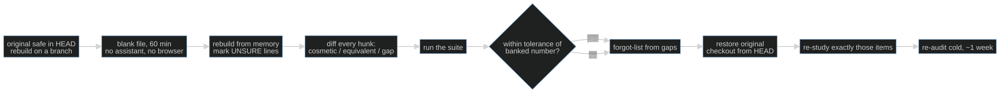

Session 13 · optional protocol
S13-rebuild-from-memory — The closed-book audit
On this page
What this teaches: why "I built it" is not evidence that you own it — and the one
measurement that is: a closed-book rebuild of the core component, judged by your own
eval suite, with the diff as diagnosis and the forgot-list as the deliverable.
Time: ~20 min reading, then ~90 min for the audit itself.
Prerequisites: S01–S02 to read the protocol (instrument vocabulary). Running
it honestly needs a system whose suite you built — the S02–S12 instrument, on a
project you own, or the cafe/ package if you walked the core path.
This session is optional. Completing S01–S12 does not require S13.
Hands-on: none — there is no notebook this session. Scaffolding the rebuild would
defeat it. Core route: the audit target is cafe/loop.py against the café suite in
cafe/evals (score it from sessions/s02-golden-evals/toy.py with
uv run marimo edit sessions/s02-golden-evals/toy.py). Optional hard path:
labs/cafe_host/ against its banked replay suite. Or choose a project of yours
and its own suite.
The protocol below is the hands-on.
The theory in depth
Authorship is not ownership
Take any non-trivial project you own — built in this path, at work, or in another course — much of it, these days, with an assistant in the loop. Owning it feels like authorship. Mechanically, it was closer to code review: you read diffs, judged them, accepted or rejected them. Reviewing builds recognition fluency — you see the append-verbatim line and nod along — which is a different and weaker thing than recall: producing the line, unaided, in a blank file. The gap between the two is where "I know this system" goes to die.
The learning-science version of this is decades old. Bjork's frame: storage strength (how durably something is embedded) vs retrieval strength (how easily you can produce it right now). Re-reading raises retrieval strength briefly and feels like learning; it does almost nothing for storage. Karpicke & Roediger's 2008 result is the sharpest version: students who studied by retrieving beat students who re-studied — at a delay, by a wide margin — while the re-studiers predicted the opposite for themselves (doi:10.1126/science.1152408). Your self-assessment of what you know is not just unreliable; it is reliably wrong in the optimistic direction.
The AI-era data says the same thing with higher stakes. METR's RCT: experienced developers believed AI made them ~20% faster; the clock said 19% slower — a 39-point gap between felt and measured (arXiv:2507.09089). Shen & Tamkin: developers who delegated to AI produced comparable output but scored dramatically lower on mastery of what they had just built (arXiv:2601.20245). The felt sense of competence is not evidence. The audit replaces it with evidence.
The audit is a measurement instrument
Same stance as S02: the rebuild is a probe, the suite is the checker, and the only question is "would I believe the number?" The naive self-audit — scroll through the code, nod, conclude ownership — fails for the same reason an unvalidated checker fails: it cannot fail. An instrument that cannot return a negative result asserts nothing.
So the audit is built to be losable. Four invariants:
- The original is out of reach. One peek converts a recall event into a
recognition event. The measurement silently stops measuring memory and starts
measuring eyesight — and the forgot-list it feeds is now wrong in a way you
cannot detect. Git history counts as out of reach: the original lives in HEAD,
not in your editor, and
git showis a deliberate act you can catch yourself making — unlike a stray tab. - The clock is visible. Fluency illusions survive leisure; they collapse under a time cap. Sixty minutes forces the honest version of every choice.
- The pass bar is external. Not "it looks right" — the number your own eval suite produces with the rebuilt component, against the number you banked.
- The byproducts are captured. The diff is not waste; it is the raw material of the forgot-list.
The suite is the decision instrument; the diff is the diagnosis
This is why the audit sits at S13 and not S03: it consumes the instrument the rest of the path teaches. Without a defended eval suite, the only bar a rebuild can clear is "it runs and feels right" — the fluency illusion with extra steps. With the suite, the question becomes empirical: does the rebuilt core hold the number you already banked?
Note what the instrument is not: the diff. Byte-similarity measures typing memory, and punishes exactly what you want to see — a rebuild that produces a different but behavior-preserving construction demonstrates ownership of the abstraction, not the text. So diff hunks get classified, not counted:
| Hunk class | What it looks like | Verdict |
|---|---|---|
| Cosmetic | different names, order, formatting | ignore |
| Behavior-preserving | different construction, same contract, invariants intact | pass — you own the idea |
| Behavioral gap | weakened or missing behavior, dropped invariant | forgot-list item |
The pass bar is the suite number within a small tolerance of the last banked one. The tolerance absorbs suite noise; it does not make gaps invisible, and a small or noisy suite can miss a real regression wherever you set it. That is why the suite is the audit's decision instrument rather than its whole judgment: the hunk review above stays a separate step, and behavioral-gap hunks feed the forgot-list even when the number comes back green.
The forgot-list is the deliverable
The number tells you whether you own the system; the forgot-list tells you which parts you don't. This is S10's error analysis turned inward: each behavioral gap becomes a taxonomy entry — what you dropped, why the original had it, the one-line rule that would have saved it.
Two rules make the list do work:
- Re-study exactly the list. Blanket re-study of the whole system is the rereading fallacy scaled up to a curriculum: high effort, low yield, and it re-trains recognition on parts that were never broken.
- Re-audit after a delay, not immediately. An instant second pass measures short-term priming, not storage. A week later, cold, measures whether the re-study took — and the spaced retrieval is itself the mechanism that makes it stick (Bjork & Bjork 2011; Nielsen's Augmenting Long-term Memory).
Run twice, a week apart, the audit is the whole learning loop: measure, diagnose, repair, verify the repair.

The protocol
One sitting, no interruptions, roughly 90 minutes end to end. The working card
for it, audit-card.md in this session's folder, lists what to prepare, what to
record and what to do afterwards. Read it before the sitting, not during it.
Core path: you studied cafe/. The core is cafe/loop.py; the suite is the café golden
set in cafe/evals, scored from toy.py
with uv run marimo edit sessions/s02-golden-evals/toy.py (a live endpoint works
too — explicitly set COURSE_MODE=live and run uv run python -m cafe.doctor
first if you need to prove it). Confirm the
rebuilt core actually ran the golden set and compare its per-scenario results, not only the
process exit status: an unchanged import would score the original, not your rebuild.
Do not open the original cafe/loop.py from history or the notebook's solution_* reveals
during the sitting.
Optional hard path: use your labs/cafe_host/loop.py and the banked lab
suite instead. Its evidence is separate from the core café golden set.
Bring your own system: any non-trivial project you own — from this path, from work, from another course — and "the suite" and "the banked number" below are that project's own.
- Choose the core. One component: the load-bearing abstraction, the file whose invariants are the system's invariants (in an agent harness, the loop). Criteria: everything else imports it; it holds the protocol rules; it fits in one sitting. Never the whole system — the rest is reference material, and looking reference material up is the correct move, not a failure. The audit targets restating and rebuilding the core abstractions and their invariants — not memorizing implementation details; whatever documentation can hold, let documentation hold.
- Set the terms. Commit a clean tree — HEAD now holds the canonical
original. Rebuild off the main line:
git switch -c rebuild-audit(or a scratch worktree:git worktree add /tmp/rebuild-audit HEAD). Delete the target file there; the original survives only in history, a deliberategit showaway. Close the assistant. Close the browser. Allowed: the language, its standard library,--help. Set a visible timer: 60 minutes. - Rebuild. Blank file at the same path, from memory. When stuck, write what
you think it should be and mark it
# UNSURE— unsure marks are data. They become honestly-labeled forgot-list items instead of hiding inside a lucky diff. - Diff and classify.
git diff HEAD -- <the file you deleted>. Label every hunk: cosmetic, behavior-preserving, or behavioral gap. Only the third bucket feeds the forgot-list. - Run the suite. The rebuilt component runs the full eval suite. Pass: the number within tolerance of the last banked one. Fail: it moved — and the behavioral gaps from Diff and classify tell you why. Either way the gap hunks stand: a small suite can stay green through a dropped invariant, so that review is not optional decoration.
- Write the forgot-list. One line per behavioral gap: what you dropped, why
the original had it, the one-line rule that would have saved it. Then restore
the original —
git checkout HEAD -- core.py, or drop the branch/worktree entirely: the rebuild was a probe, not a patch — the banked artifact stays canonical. - Re-study, then re-audit cold. Study exactly the forgot-list items, nothing else. Wait a week. Run the audit again from Set the terms. The second pass is where retention happens; the first pass only told you the truth.
State of the art (as of August 2026)
| Development | Status | Take |
|---|---|---|
| Retrieval practice beats re-study: Karpicke & Roediger, Science 2008 (doi); practice testing and distributed practice rated highest-utility, rereading and highlighting lowest (Dunlosky et al. 2013, doi) | already in this path | This session is the testing effect aimed at your own repo. The rebuild is a test — and the research says the test is also the learning event. |
| Fluency self-reports are miscalibrated at scale: METR's RCT, 16 experienced developers — believed ~20% faster with AI, measured 19% slower (arXiv:2507.09089) | adopt | Adopt the stance, not the number: "I know this system" is evidence of nothing until it survives a closed-book measurement. |
| AI assistance impairs skill formation unless cognitively engaged: Shen & Tamkin RCT, 52 engineers; the delegating patterns produced output without learning, three engaged patterns preserved it (arXiv:2601.20245; Anthropic write-up) | adopt | The prevention side of this session: how you build determines what the audit finds. Engage during construction; audit after. |
| "Cognitive debt" framing: Kosmyna et al., EEG essay study — the LLM group showed weakest engagement and poorest recall of their own text (arXiv:2506.08872); see the methodological critique (arXiv:2601.00856) | recognize | Direction matches authorship≠ownership, but it is a small preprint with a posted critique. Motivation, never proof. |
| Desirable difficulties: storage vs retrieval strength; conditions that slow practice improve retention (Bjork & Bjork 2011, chapter PDF) | recognize | The theoretical frame: the audit is deliberately difficult because difficulty is what makes the measurement honest and the repair durable. |
| Spaced repetition for the forgot-list (Nielsen, Augmenting Long-term Memory) | adopt | Each forgot-list item becomes cards; the cold re-audit a week later is the spaced retrieval event. |
| "Just re-read the codebase and your notes" as audit prep | ignore | The lowest-yield study activity known (Dunlosky et al. 2013). A recognition warm-up that inflates fluency and quietly spoils the measurement. |
Annotated readings
- Karpicke & Roediger, The Critical Importance of Retrieval for Learning (Science, 2008). Extract this: the prediction reversal — students forecast that re-study would win, retrieval won at the delay. Your intuitions about what you know are the thing being measured and the thing being disproved.
- Becker et al. (METR), Measuring the Impact of Early-2025 AI on Experienced Open-Source Developer Productivity (2025). Extract this: the three-way gap — forecast +24%, felt +20%, measured −19%. That is the calibration curve of every "I'm on top of this system" report you have ever given yourself.
- Shen & Tamkin, How AI Impacts Skill Formation (2026). Extract this: the six interaction patterns and which three preserved learning. Delegation ships code without forming skill; engagement is the difference, and it is a choice you make per interaction.
- Bjork & Bjork, Making things hard on yourself, but in a good way (2011). Extract this: storage strength vs retrieval strength, and why performance-during-practice is a misleading index of learning — the reason the audit is closed-book, timed, and re-run cold.
Misconceptions and failure modes
- "I wrote it, so I own it." Assisted authorship is code review, and review trains recognition. The audit exists precisely because authorship and ownership come apart under assistance.
- The single peek. One look at the original converts recall into recognition, invalidates the measurement, and poisons the forgot-list — you will re-study the wrong things with full confidence.
- Treating the diff as the score. Byte-similarity measures typing memory. A clean suite number over a heavily-rewritten file is a pass; a near-identical file that dropped one invariant is a forgot-list item — and if the suite is too small to see it, the hunk review is the separate check that catches it. The suite decides; it is an instrument, not an oracle.
- Auditing the whole system. The audit covers the load-bearing core. For everything else, lookup is the designed behavior — expanding scope just guarantees a noisy, discouraging measurement.
- Re-studying everything after a bad audit. The forgot-list is the deliverable; blanket re-study is the rereading fallacy at curriculum scale.
Self-check
Why does re-reading your own code overestimate what you can rebuild?
Re-reading trains recognition fluency — the code feels familiar, and familiarity masquerades as knowledge. Recall (producing the code unaided) draws on storage strength, which re-reading barely improves. The gap only shows up at a blank file, under a clock.What does one peek at the original do to the measurement?
It converts a recall event into a recognition event. The rebuild now measures eyesight, not memory — and the forgot-list inherits the error, so the re-study phase fixes the wrong gaps while the real ones stay invisible.The rebuild holds the suite number but the diff is enormous. Pass or fail?
Pass — if the hunks classify as cosmetic or behavior-preserving. The suite is the decision instrument; the diff is the diagnosis. Behavior-preserving differences demonstrate ownership of the abstraction rather than the text — that is the stronger result, not a problem.Why does this audit sit at S13 and not earlier?
Two reasons. It needs the eval instrument S02–S12 teach you to build — without a banked, defended number, "it runs and feels right" is the only bar, and that bar is the fluency illusion. And it needs a system large enough that ownership is genuinely in doubt — a project you own, not a toy.What's next
S14-ship-and-pilot: the audit proves the system is yours; the last session proves it works for someone who is not you. Acceptance runs on unseen scenarios, assembled architecture and failure documentation, and a public evidence artifact — the rebuild says you can defend the machine, S14 makes you defend it in public.